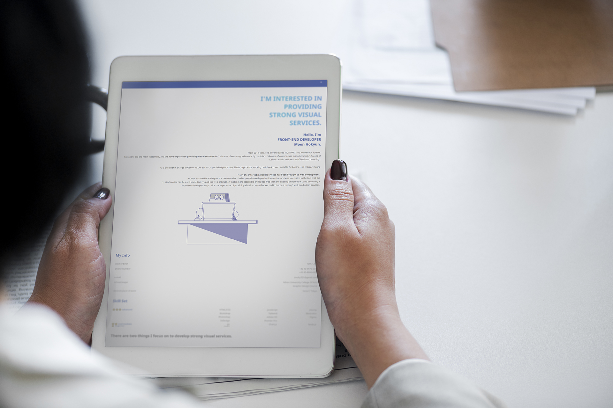
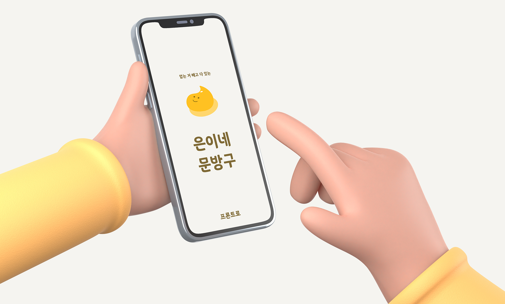

I'm interested in
providing
strong visual
services.
Hello. I'm
FRONT-END DEVELOPER
Moon Hokyun.
2018년부터 3년간 무노아트(MUNOART)라는 브랜드를 만들고 활동하였습니다.
음악가들이 주 고객으로, 음악가 맞춤 굿즈
제작 330건, 커스텀 케이스
제작 59건,
비즈니스 명함 12건, 비즈니스 브랜딩 9건의 비주얼 서비스를 제공한 경험이 있습니다.
출판사인 겐토샤 디자인 프로 담당 디자이너로서 사업가들의 비즈니스에 적합한 북 커버 작업 6건을 진행한 경험이 있습니다.
현재는 시각 서비스에 관한 관심을 웹 개발로 가져왔습니다.
2021년에 드럼 스튜디오의 브랜딩 작업을 진행하게 되었고, 웹 제작 서비스 제공을 해보며,
만들어진 서비스가
즉각적으로
사용이 가능하다는 것과 기존 제작하던 인쇄 매체보다 더욱 접근성이 뛰어나고 공간의 제약이 없는 웹 제작에 흥미를 느끼고,
Front-End 개발자가 되어 기존에 가지고 있던 시각 서비스 제공
경험을 웹
제작 서비스에서 제공하고 있습니다.
My Info
생년월일
1995.12.16
전화번호
+82 10-9970-5350
+81 80-8886-6922
이메일
soulty321@gmail.com
학교/전공
Nihon University College Of Arts
Graphic Design Course
희망 근무지
Seoul / Tokyo
Skill Set
| ⭐⭐⭐ advanced | HTML/CSS | JavaScript | JQurey |
|---|---|---|---|
| Bootstrap | Tailwind | Illustrator | |
| Photoshop | Adobe XD | Figma | |
| InDesign | Premire Pro | ||
| ⭐⭐ intermediate | Git | Chart.js | Node.js |
| ⭐ beginner | React |
강력한 시각 서비스 개발을 위해 중점으로 공부하는 것은 두 가지가 있습니다.
효과적인 UX/UI구현
사용자를 끌어들이는 UX/UI의 비밀
(Designing Interfaces: Patterns for
Effective Interaction Design), 레이아웃 중심의 과제 등을 통해 사용자가 보기 좋은 여백을 중시하며 화면을 구성해 왔고, 시각적으로 몰입감 있는 UX/UI를 만들기 위해
노력해왔습니다.
사용자를 위한 인터페이스에서 중요하다고 느낀 점은 주제의 배치와 여백의 조절이라고 생각합니다.
이러한 부분을 실무에 적용해보고자 ___등의 프로젝트를 만들어 보았습니다.
(조금 더 공부해서 내용을 보충해 보겠습니다.)
DOM Control을 통한 사용자 반응형 웹 개발
JS를 사용하는 이유는 사용자와 인터렉션 할 수 있게 해주는 언어이기 때문이라고 생각합니다.
그러므로 Event와 Dom을 중점적으로 공부하였고,
이러한 부분을 실무에 적용해보고자 ___등의 프로젝트를 만들어 보았습니다.
(조금 더 공부해서 내용을 보충해 보겠습니다.)

PROJECT
1. DTB Music Studio

- 리뉴얼 예정
- 사용자 : 뮤직 스튜디오의 서비스에 관심있는 사람
- 개발인원 : 1명 (본인)
- 기간 : 2021/08/30~2021/09/08
- 적용기술 : HTML/CSS/JS
- 기여부분 : 브랜딩, 기획, 개발, UX/UI
- Github Link
- Project Link
2. MOON'S PORTFOLIO
- 제작하는 포트폴리오 추가 예정
- 사용자 : 나의 이력 확인 및 포트폴리오를 확인하고자 하는 사람
- 개발인원 : 1명 (본인)
- 기간 : 2021/12/30~
- 적용기술 : HTML/CSS/JS
- 기여부분 : 기획, 개발, UX/UI
- Github Link
- Project Link
3. 은이네 문방구 (Eun's Stationery)
- 제작 예정
- 사용자 : 문구류 쇼핑 및 SNS를 이용하고 싶은 사람
- 개발인원 : 4명
- 기간 : 2022/01/03~2022/01/17
- 적용기술 : HTML/CSS/JS
- 기여부분 : 기획, 개발, UX/UI
- Github Link
- Project Link